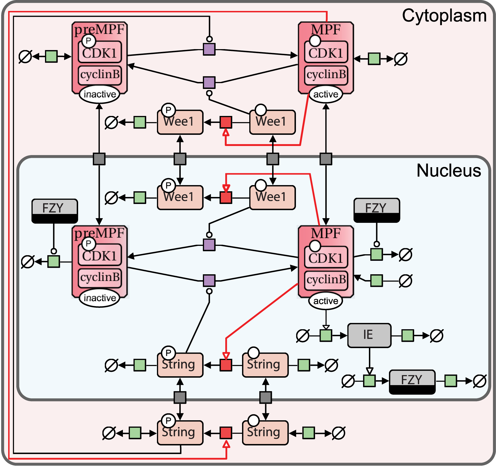
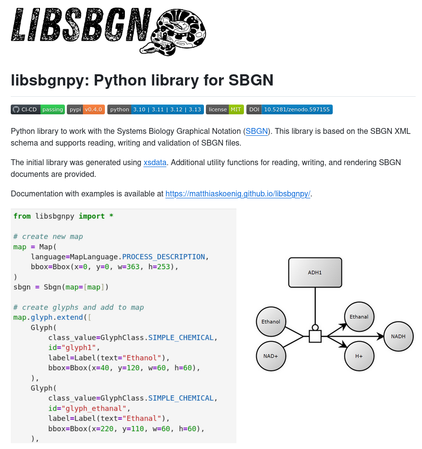

Python library for SBGN
Humboldt-University Berlin, Faculty of Life Science, Systems Medicine of Liver
https://livermetabolism.com
2025-04-15


"""Glucokinase example."""
map = Map(
language=MapLanguage.PROCESS_DESCRIPTION,
bbox=Bbox(x=0, y=0, w=363, h=253),
)
sbgn = Sbgn(map=[map])
# Add glyphs
map.glyph.extend([
Glyph(
class_value=GlyphClass.SIMPLE_CHEMICAL,
id="glyph1",
label=Label(text="Ethanol"),
bbox=Bbox(x=40, y=120, w=60, h=60),
),
Glyph(
class_value=GlyphClass.SIMPLE_CHEMICAL,
id="glyph_ethanal",
label=Label(text="Ethanal"),
bbox=Bbox(x=220, y=110, w=60, h=60),
),
Glyph(
class_value=GlyphClass.MACROMOLECULE,
id="glyph_adh1",
label=Label(text="ADH1"),
bbox=Bbox(x=106, y=20, w=108, h=60),
),
Glyph(
class_value=GlyphClass.SIMPLE_CHEMICAL,
id="glyph_h",
label=Label(text="H+"),
bbox=Bbox(x=220, y=190, w=60, h=60),
),
Glyph(
class_value=GlyphClass.SIMPLE_CHEMICAL,
id="glyph_nad",
label=Label(text="NAD+"),
bbox=Bbox(x=40, y=190, w=60, h=60),
),
Glyph(
class_value=GlyphClass.SIMPLE_CHEMICAL,
id="glyph_nadh",
label=Label(text="NADH"),
bbox=Bbox(x=300, y=150, w=60, h=60),
),
# glyph with ports (process)
Glyph(
class_value=GlyphClass.PROCESS,
id="pn1",
orientation=GlyphOrientation.HORIZONTAL,
bbox=Bbox(x=148, y=168, w=24, h=24),
port=[
Port(x=136, y=180, id="pn1.1"),
Port(x=184, y=180, id="pn1.2"),
],
),
])# create arcs and set the start and end points
map.arc.extend([
Arc(
class_value=ArcClass.CONSUMPTION,
source="glyph1",
target="pn1.1",
id="a01",
start=Arc.Start(x=98, y=160),
end=Arc.End(x=136, y=180),
),
Arc(
class_value=ArcClass.PRODUCTION,
source="pn1.2",
target="glyph_nadh",
id="a02",
start=Arc.Start(x=184, y=180),
end=Arc.End(x=300, y=180),
),
Arc(
class_value=ArcClass.CATALYSIS,
source="glyph_adh1",
target="pn1",
id="a03",
start=Arc.Start(x=160, y=80),
end=Arc.End(x=160, y=168),
),
Arc(
class_value=ArcClass.PRODUCTION,
source="pn1.2",
target="glyph_h",
id="a04",
start=Arc.Start(x=184, y=180),
end=Arc.End(x=224, y=202),
),
Arc(
class_value=ArcClass.PRODUCTION,
source="pn1.2",
target="glyph_ethanal",
id="a05",
start=Arc.Start(x=184, y=180),
end=Arc.End(x=224, y=154),
),
Arc(
class_value=ArcClass.CONSUMPTION,
source="glyph_nad",
target="pn1.1",
id="a06",
start=Arc.Start(x=95, y=202),
end=Arc.End(x=136, y=180),
),
]) render_info = RenderInformation(
id="ethanol_render_info",
program_name="libsbgnpy",
program_version="0.4.0",
list_of_color_definitions=ListOfColorDefinitions(
color_definition=[
ColorDefinition(id="blue", value="#1f77b4"),
ColorDefinition(id="orange", value="#ff7f0e"),
ColorDefinition(id="white", value="#000000"),
ColorDefinition(id="grey", value="#cccccc"),
ColorDefinition(id="black", value="#ffffff"),
]
),
list_of_gradient_definitions=ListOfGradientDefinitions(
),
list_of_styles=ListOfStyles(
[
Style(
id_list="ethanol ethanal",
g=G(stroke="black", stroke_width=2, fill="blue"),
),
Style(
id_list="adh1",
g=G(stroke="black", stroke_width=2, fill="orange"),
),
Style(
id_list="nad nadh h",
g=G(stroke="black", stroke_width=1, fill="grey"),
),
]
),
)